CVPR2023 TriDet: Temporal Action Detection with Relative Boundary Modeling.
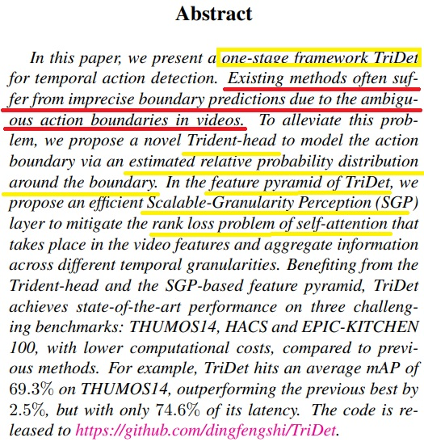
- Abstract
이 논문에서 사용된 framework는 one-stage framework이다. 저자는 그전의 제시된 방법들이 경계(boundary)를 예측하는데 있어서 모호한(ambiguous)한 액션 경계로 인해 예측이 부정확(imprecise)하다고 문제를 제기했다.
그래서 저자는 Trident-head -> 액션 경계 주변의 상대적인 확률 분포를 추가로 정해서 액션 경계를 모델링을 함으로써 이 문제를 해결하는데 더 효과적이라 얘기 했다.
TriDet의 feature probability에서는 Scalable-Granularity Perception(SGP)를 사용하여 rank loss problem이랑 self-attention의 문제점을 더욱 완화(mitigate) 시킨걸 알 수 있었다. < 저자가 개발한 방법인듯.
이러한 방법은 서로 다른 시간적(temporal) 세분화(granularities)를 통해 비디오의 특징과 정보를 집계(aggregate)함.그냥 비디오를 프레임으로 쪼개서 각각의 특징과 정보를 얻어낸다는 뜻인듯.
- One-stage framework: One-stage 객체 감지는 입력 이미지에서 객체의 위치와 클래스를 직접 예측하는 방식이고. 이러한 접근 방식은 단일 네트워크로 구성되어 있으며, 객체의 위치와 클래스에 대한 정보를 동시에 출력함.
- Two-stage framework: Two-stage 객체 감지는 먼저 입력 이미지에서 후보 영역(Region Proposal)을 찾고, 이후에 각 후보 영역에 대해 객체의 위치와 클래스를 예측함. 이러한 접근 방식은 두 개의 주요 단계로 구성됨. 첫 번째 단계에서는 후보 영역을 생성하고, 두 번째 단계에서는 실제로 객체를 분류하고 위치를 예측함.
- Rank loss problem of self-attention: 자기 주의는 주어진 입력 순서 내의 요소들 간의 상호 작용을 모델링 하는 방법 중 하나다, temporal action detect에서는 비디오 순서의 특징을 자기 주의 매커니즘으로 표현하고 이를 사용해서 액션 경계를 예측함.
그러나 문제는 self-attention방법은 모든 요소 간에 상호 작용을 계산하기 때문에 많은 계산 비용을 요구함, 그래서 저자가 사용한 방법이 SGP이다, 서로 다른 시간적 세분화 수준에서 정보를 집계해서 rank loss problem의 문제를 완화함.
- Self-attention: 각 인스턴트의 피처를 비디오 레벨의 평균 피처와 비교하여 유사도를 측정했습니다.
그 결과, 셀프 어텐션에서는 높은 유사도를 보여줬는데, 이는 각 인스턴트의 피처들이 비슷한 특성을 가지고 있어서 서로 구별하기 어렵다는 의미입니다.
이러한 현상을 "Rank loss problem"라고 합니다.( 코사인 유사도나 유클리드 거리)
하지만 이러한 self-attention 기법은 각 인스턴트의 피처들이 유사한 특성을 가지고 있을 때, 구별하기 어려운 "Rank loss problem"를 발생시킬 수 있습니다.
- Rank loss problem: 입력 순서의 요소들 간의 상호 작용을 계산할 때 상대적인 순위 정보를 잘 반영하지 못해서 모델의 성능에 영향을 주는 것을 말한다.
SGP는 이 문제를 해결하고 더 강한 식별력을 보여줍니다. SGP는 각 인스턴트의 피처를 더 세부적으로 고려하여 비디오 레벨의 평균 피처와의 유사도를 측정합니다.
이를 통해 각 인스턴트의 피처들이 서로 다른 특성을 가지며 더 잘 구별될 수 있게 됩니다. 따라서 SGP는 셀프 어텐션에서 나타나는 Rank loss problem를 해결하고, 더 강한 식별력을 나타냅니다.
SGP는 특정 인스턴트가 액션의 시작 또는 끝에 해당하는지 여부를 판단할 때, 해당 인스턴트를 포함한 주변 인스턴트들의 특징을 고려합니다. 예를 들어, 시작 인스턴트를 예측하는 경우, SGP는 시작 인스턴트 주변의 인스턴트들이 액션의 특성을 가지고 있는지, 액션의 시작과 관련된 패턴이 있는지 등을 고려합니다.
마찬가지로, 끝 인스턴트를 예측하는 경우에도 끝 인스턴트 주변의 인스턴트들의 특징을 고려하여 액션의 특성을 포착합니다.
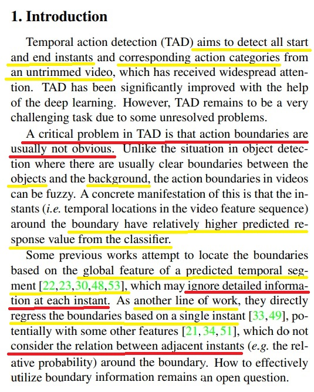
- 1. Introduction
TAD는 모든 시작점와 마지막의 순간들을 검출하는것과 해당 액션들을 모두 분류하는것이 목표이다.딥러닝의 발달로 인해 많은 도움을 주었지만 아직도 안풀린 도전적인 문제들이 남아있다.
잴 큰 문제는 액션 경계가 분명하지 않다는것이다. 물체 검출에선 배경과 물체를 쉽게 분류하는것이 쉽지만 TAD에선 아니다. 왜냐하면 비디오에선 액션들이 흐릿흐릿(fuzzy)하기 때문이다. <- 예를 들어 영상에서 씨리얼을 먹을때 씨리얼을 그릇에 담는 동작인디 우유를 담는 동작인디 분류하기가 애매한것을 설명하는듯.
이것을 더 자세히 말하면 (A concrete manifestation of this) 이 순간들은 주변의 경계의 관계성이 분류기로 부터 너무나 높은 응답률을 가지고 있음. <- 아마도 프레임 1, 2, 3, 4, 5,등등 주변의 동작들이 비슷비슷한걸 설명하는듯.
여기서 저자는 전에 사용했던 방법들에 문제를 제의함.
- 1. 경계를 global feature를 기준으로 시간적 분류를 예측해서, 각각의 순간들의 정보들을 무시함.
- 2. 바로 경계를 단일 순간을 기준으로 회귀를 하였기에 각 인접한(adjacent) 순간들의 관계들의 특성이나 관계를 고려하지 않음.
- Instants: 비디오 feature sequence 내에서의 시간적 위치를 말함. TAD는 비디오를 프레임이나 시간적 단위로 분할해서 각 단위에 대한 피처를 추출함. 이때 각 단위에 해당하는 시간적 위치를 instants라고 함.
그럼 왜 단일 인스턴트를 기반으로 경계를 회귀하면 인접한 인스턴트간의 관계를 고려 안할까?
A: 단일 인스턴트를 사용하면 모델이 간단하고 계산의 효율성이 좋지만 단점이 바로 인스턴트 간의 관계를 고려 안 한다는 것 이다.
예시를 들어보면 어떠한 액션이 시작되는 지점에서 인스턴트 A와 인스턴트 B가 있을 때, 단일 인스턴트 기반의 방법은 A와 B 각각의 인스턴트에서 시작점을 예측함.
그러나 이 방법은 A와 B사이의 어떠한 패턴이나 상관관계가 있는지 알 수 없음.
왜 예측된 시간적 segment의 global feature로 경계를 위치 시키려고 하면 각각의 인스턴트의 세부정보를 무시할까?
A: 액션 탐지에서 세그먼트의 전역적인 피처는 해당 세그먼트 내에서 액션의 특징을 대표하는 통계적 또는 요약 정보입니다. 이 피처는 세그먼트 전체를 포괄하는 값이므로, 개별 인스턴트의 세부 정보를 완전히 반영하지는 않을 수 있음.
세그먼트 내 인스턴트들 간의 개별적인 세부 특징이 무시되거나 평균화 될 수 있음.
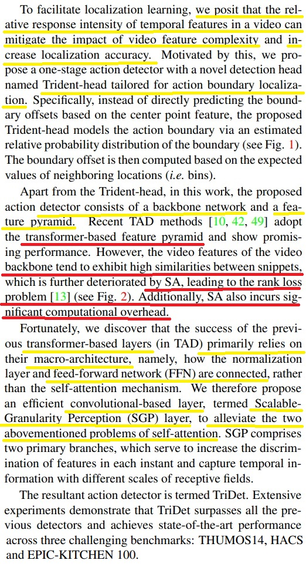
저자는 Trident-head가 지역적 학습을 가능하게하고 특성 복잡도를 완화시키고 지역화 정확도를 높인다고 하였다.이 방법은 경게의 상대적인 확률 분포를 추정하여 액션 경계를 모델링 함. Boundary offset은 이웃 위치(구간) 의 예상값을 기반으로 계산됨.Trident-head외에도 제안된 액션 탐지기는 백본 네트워크와 피처 파이미드로 구성되었있음.
최근의 TAD(Temporal Action Detection) 방법들은 트랜스포머(transformer-based layer) 기반의 피처 피라미드를 채택하며, 유망한 성능을 보여주고 있습니다. 그러나 비디오 백본의 비디오 피처는 스니펫(snippet)片段들 사이에서 높은 유사성을 나타내는 경향이 있으며,
이는 SA(Self-Attention)에 의해 더욱 악화되어 랭크 손실 문제를 야기합니다. 또한, SA는 상당한 계산 오버헤드를 발생시킴.이전의 transformer-based layer들이 성능이 좋은 이유는 주로 self-attention매커니즘 보다는 정규화 레이어와 feed-forward network FFN의 견결 방식 Macro architecture 의존한다는 사실을 발견함.
따라서 저자는 self-attention의 두가지 방법을 해결한 convolution-based layer인 SGP을 제안함. 주로 두 개의 분기로 구성되어 각 인스턴트의 피처의 식별력을 높이고 다양한 스케일의 수용 영역을 사용하여 시간 정보를 캡처합니다.
transformer-based layer
- 1. Transformer 아키텍처는 기존의 순환 신경망(RNN)이나 합성곱 신경망(CNN)과는 다른 셀프 어텐션(self-attention) 메커니즘을 사용하여 문맥을 모델링합니다. 셀프 어텐션은 입력 시퀀스 내의 다른 위치에 대한 의존성을 고려하여 각 토큰의 표현을 계산하는 방법입니다. 이를 통해 문장의 전체적인 의미와 구조를 파악할 수 있습니다.
- 2. Transformer-based layer는 주로 인코더-디코더 아키텍처에서 사용됩니다. 인코더는 입력 시퀀스를 임베딩하고 셀프 어텐션을 통해 문맥 정보를 추출합니다. 디코더는 이러한 문맥 정보를 기반으로 다음 토큰을 예측하며, 이를 반복하여 출력 시퀀스를 생성합니다.
- 3-1. 셀프 어텐션(Self-Attention): 입력 시퀀스의 각 토큰이 다른 토큰들과 어떤 정도로 상호작용하는지를 계산합니다. 이를 통해 문맥 정보를 파악하고 토큰 간의 관계를 모델링합니다.
- 3-2. 멀티헤드 어텐션(Multi-Head Attention): 여러 개의 셀프 어텐션 계층을 동시에 사용하여 서로 다른 관점에서의 어텐션을 수행합니다. 이를 통해 모델이 다양한 종류의 문맥 정보를 학습할 수 있습니다.
- 3-3. 피드포워드 신경망(Feed-Forward Neural Network): 셀프 어텐션의 결과를 이용하여 토큰의 표현을 업데이트하는 단순한 전방향 신경망 계층입니다. 이 계층은 비선형성을 도입하여 모델의 표현 능력을 향상시킵니다.
- 3-4. Transformer-based layer는 주어진 입력 시퀀스의 전역적인 의미를 파악하고, 장기 의존성을 모델링하는 데 효과적입니다. 이는 기계 번역, 문장 생성, 문장 분류 등의 자연어 처리 작업에서 성능 향상을 이끌어냅니다. 또한, 이미지 처리 및 음성 처리와 같은 다른 영역에서도 적용되는 경우가 있습니다.
Macro architecture
- 1. Macro architecture는 컴퓨터 과학 및 소프트웨어 엔지니어링에서 사용되는 용어로, 시스템이나 소프트웨어의 전체 구조나 레이아웃을 나타냅니다. 이는 시스템의 큰 틀을 형성하고 전체적인 디자인 원칙과 패턴을 결정하는 것을 의미합니다.
- 2. 예를 들어, 소프트웨어의 macro architecture는 시스템의 주요 구성 요소, 모듈 간의 관계, 데이터 흐름, 상호 작용 방식 등을 정의합니다. 이는 시스템이나 소프트웨어의 고수준 구조를 설계하고 이해하는 데 도움이 됩니다. Macro architecture는 개발자가 전반적인 시스템 디자인을 계획하고 조율하는 데 도움을 주는 중요한 개념입니다.
Feedforward Network
Feedfoward Network에 대한 설명
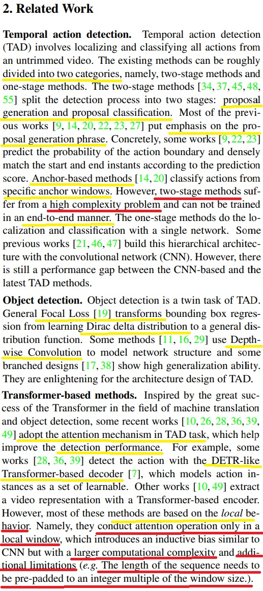
- 2. Related Work
Temporal action detection: 시간적 액션 감지(Temporal action detection)은 트리밍되지 않은 비디오에서 모든 액션을 지역화하고 분류하는 작업. 대부분 one-stage methods나 tow-stage methods로 나눔.two –stage methods는 제안 생성과 제안 분류 두 단계로 나눔(제안 생성과 제안 분류), 이전 작업의 대부분은 제안 생성 단계에 중점을 두었음. 구체적으로, 일부 작업은 액션 경계의 확률을 예측하고 예측 점수에 따라 시작과 끝 인스턴트를 밀집하게 매치함.
앵커 기반 방법은 특정 앵커 윈도우에서 액션을 분류합니다. 그러나 두 단계 방법은 높은 복잡성 문제를 가지고 있으며, end-to-end로 훈련될 수 없습니다. One-stage methods는 단일 네트워크로 지역화와 분류를 수행함, 이전의 몇 가지 작업은 합성곱 신경망 (CNN)을 사용하여 이러한 계층적 아키텍처를 구축했었음, 하지만 CNN기반과 TAD기반 간에 성능 차이는 여전히 존재함.
Object detection: 객체 감지는 TAD의 쌍둥이 작업입니다. "General Focal Loss"는 경계 상자 회귀를 dirac delta distribution 학습에서 general(일반적인) 분포 함수로 변환하는 기법입니다.즉 경게 상자 회귀를 다양한 분포 함수로 학습 할 수 있도록 도와주는것임. 그리고 일부 방법들은 깊이별 합성곱(Depthwise Convolution)을 사용하여 네트워크 구조를 모델링하여 효과적인 모델링을하고 높은 일반화 능력을 제공함.
Transformer-based methods: 객체 감지 분야에서 transformer의 큰 성공을 보고 다들 attention 매커니즘을 TAD에 사용하여 성능을 높이려고 시도한다. 일부 연구에선 DETR과 비슷한 transformer 기반의 디코더를 사용하여 액션을 탐지함. 이들은 액션 인스턴스를 학습 가능한 집합으로 모델링함. 다른 연구에서는 Transformer 기반 인코더를 사용하여 비디오 표현을 추출합니다. 그러나 이러한 방법들의 대부분은 지역적 특징을 기반으로 함. 즉 로컬 윈도우에서만 실행 가능하고 이는 CNN과 유사한 귀납적인 편향을 도입하지만 계산 복작성이 크고 sequence의 길이를 윈도우 크기의 정수 배수로 사전 패팅해야함.
Proposal generation phase
- 1. 객체 탐지 및 추적 작업에서 사용되는 단계입니다. 이 단계에서는 입력된 이미지 또는 비디오에서 객체의 후보 지역을 생성합니다. 이러한 후보 지역은 객체가 있을 가능성이 높은 영역을 나타냅니다.
- 2. Proposal generation은 일반적으로 객체의 경계 상자 또는 세그먼트를 생성하는 방식으로 이루어집니다. 이를 위해 다양한 알고리즘과 기법이 사용될 수 있습니다. 이하 예시
- 3-1.슬라이딩 윈도우: 입력 이미지 또는 비디오를 격자 또는 윈도우로 분할하고, 각 윈도우에 대해 객체의 존재 여부를 확인합니다. 이를 통해 후보 경계 상자를 생성할 수 있습니다.
- 3-2. 선택적 검색 (Selective Search): 이미지에서 객체의 후보 영역을 생성하기 위해 다양한 크기, 색상, 텍스처 등의 특징을 사용하여 유사한 영역을 그룹화합니다. 이러한 그룹은 객체가 존재할 가능성이 있는 경계 상자를 생성하는 데 사용될 수 있습니다.
- 3-3. R-CNN 계열: Region-based Convolutional Neural Network (R-CNN)은 CNN 기반의 객체 탐지 알고리즘으로, 이미지에서 후보 지역을 추출하고 이를 딥러닝 모델에 입력하여 객체를 탐지합니다. 이를 통해 객체의 경계 상자를 생성하고, 후속 단계에서 객체를 분류하거나 추적할 수 있습니다.
- 4. Proposal generation 단계는 후속 단계에서 객체를 식별하고 분류하는 작업을 위한 초기 후보 지역을 생성하는 중요한 단계입니다. 이를 통해 객체 탐지 및 추적 시스템은 관심 대상 객체에 대한 정확한 경계 상자 또는 세그먼트를 제공할 수 있습니다.
Anchor-based method
- 1. 객체 탐지 작업에서 사용되는 기술 중 하나입니다. 이 방법은 이미지 또는 비디오에서 객체의 위치와 경계 상자를 예측하는 데 사용됩니다.
- 2. Proposal generation은 일반적으로 객체의 경계 상자 또는 세그먼트를 생성하는 방식으로 이루어집니다. 이를 위해 다양한 알고리즘과 기법이 사용될 수 있습니다. 이하 예시
- 3-1.슬라이딩 윈도우: 입력 이미지 또는 비디오를 격자 또는 윈도우로 분할하고, 각 윈도우에 대해 객체의 존재 여부를 확인합니다. 이를 통해 후보 경계 상자를 생성할 수 있습니다.
- 3-2. 선택적 검색 (Selective Search): 이미지에서 객체의 후보 영역을 생성하기 위해 다양한 크기, 색상, 텍스처 등의 특징을 사용하여 유사한 영역을 그룹화합니다. 이러한 그룹은 객체가 존재할 가능성이 있는 경계 상자를 생성하는 데 사용될 수 있습니다.
- 3-3. R-CNN 계열: Region-based Convolutional Neural Network (R-CNN)은 CNN 기반의 객체 탐지 알고리즘으로, 이미지에서 후보 지역을 추출하고 이를 딥러닝 모델에 입력하여 객체를 탐지합니다. 이를 통해 객체의 경계 상자를 생성하고, 후속 단계에서 객체를 분류하거나 추적할 수 있습니다.
- 4. Proposal generation 단계는 후속 단계에서 객체를 식별하고 분류하는 작업을 위한 초기 후보 지역을 생성하는 중요한 단계입니다. 이를 통해 객체 탐지 및 추적 시스템은 관심 대상 객체에 대한 정확한 경계 상자 또는 세그먼트를 제공할 수 있습니다.
Proposal generation phase
- 1. 객체 탐지 및 추적 작업에서 사용되는 단계입니다. 이 단계에서는 입력된 이미지 또는 비디오에서 객체의 후보 지역을 생성합니다. 이러한 후보 지역은 객체가 있을 가능성이 높은 영역을 나타냅니다.
- 2. Anchor-based method는 객체의 경계 상자를 예측하기 위해 사전에 정의된 일련의 고정된 경계 상자인 "앵커"를 사용합니다. 이 앵커는 사전에 정의된 다양한 크기와 종횡비를 가지며, 이미지 또는 비디오의 각 위치에 대해 배치됩니다.
앵커는 일종의 템플릿으로 볼 수 있으며, 객체의 크기와 종횡비에 대한 예상을 내포하고 있습니다. 예를 들어, 작은 객체에는 작은 크기의 앵커가 사용되고, 세로로 긴 객체에는 세로로 긴 앵커가 사용됩니다.
앵커는 초기에 무작위로 배치되지만, 학습 과정에서 앵커와 실제 객체 사이의 경계 상자 예측을 비교하여 앵커를 조정하고 개선합니다. 이를 통해 앵커는 객체의 위치와 크기를 잘 예측할 수 있도록 조정됩니다.
앵커 기반 방법은 주로 컨볼루션 신경망 (CNN) 기반의 객체 탐지 모델에서 사용됩니다. 예를 들어, Faster R-CNN, SSD (Single Shot MultiBox Detector), RetinaNet 등이 앵커 기반 방법을 사용하는 대표적인 모델입니다.
앵커 기반 방법은 객체 탐지 작업에서 일반적으로 높은 정확도를 제공하며, 다양한 크기와 종횡비를 가진 객체를 효과적으로 탐지할 수 있습니다.
End-to-end training
- 1. 머신 러닝 또는 딥 러닝 모델을 훈련하는 방법 중 하나입니다. 이 용어는 입력 데이터로부터 출력까지 전체 프로세스를 하나의 단일 시스템으로 훈련하는 방식을 의미합니다.
- 2. 일반적으로, 기존의 머신 러닝 접근 방식은 여러 개의 단계로 나누어져 있습니다. 각 단계는 입력 데이터를 중간 표현으로 변환하고, 그 다음 단계에서 이 중간 표현을 사용하여 최종 출력을 예측하는 방식으로 이루어집니다. 이러한 단계들은 개별적으로 훈련될 수 있고, 각각의 단계는 입력과 출력 사이에서 일부 정보를 처리합니다.
- 3. 하지만 end-to-end 훈련은 이러한 단계를 모두 하나의 네트워크로 통합하여 훈련하는 방식입니다. 입력부터 출력까지의 전체 프로세스를 하나의 모델로 구성하고, 이 모델을 한 번에 최적화합니다. 이렇게 하면 중간 단계의 표현이 자동으로 학습되며, 최종 출력에 도달하기 위해 최적화됩니다.
- 4. End-to-end 훈련은 종종 복잡한 작업에서 유용하며, 사람이 수동으로 설계한 중간 단계나 기능을 필요로 하지 않습니다. 대신, 데이터로부터 입력과 출력의 관계를 직접 학습하여 최적의 모델을 찾습니다. 이를 통해 더 간단하고 효율적인 모델을 구축할 수 있으며, 전체 시스템의 성능을 향상시킬 수 있습니다.
Local window
- 1. 주어진 데이터에서 특정 지역 또는 영역을 나타내는 것을 의미합니다. 데이터는 일반적으로 연속적인 시퀀스로 구성되어 있으며, 각 지점 또는 위치는 해당 지점의 주변 정보를 포함합니다.
- 2. 예를 들어, 텍스트 데이터에서 local window는 주어진 텍스트에서 특정 단어를 중심으로 그 주변 단어들을 나타내는 범위를 말합니다. 이렇게 구성된 local window를 사용하여 해당 단어의 문맥을 파악하거나 문장 내에서의 관련 단어들을 분석하는 등의 작업을 수행할 수 있습니다.
- 3. 이와 비슷하게, 이미지 데이터에서 local window는 이미지에서 특정 지점을 중심으로 주변 픽셀들을 포함하는 영역을 나타냅니다. 이 영역은 이미지에서 특정 객체 또는 패턴을 인식하거나 이미지 내의 특정 지역을 분석하는 데 사용될 수 있습니다.
- 4. 따라서 local window는 데이터에서 특정 지역을 지정하고 해당 지역 주변의 정보를 사용하여 분석, 처리 또는 추론 작업을 수행하는 데 사용되는 개념입니다. 이는 다양한 영역에서 데이터의 지역적 특성을 활용하는 데 도움이 됩니다.
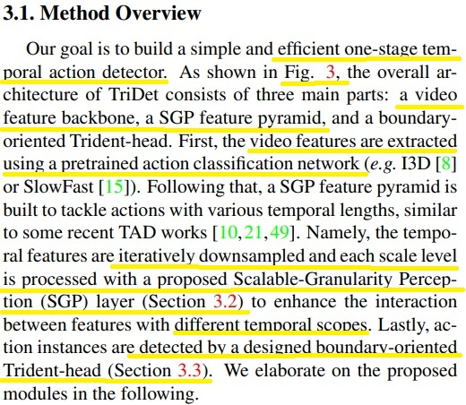
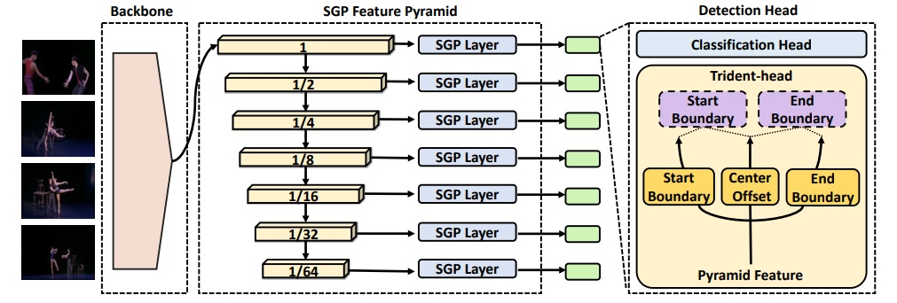
- 3.1. Method Overview
TriDet은 그림처럼 3단계로 구성되어있음. Video featrue backbone SGP 피처 피라미드 및 경계 중심 Trident-head가있음. 비디오 피처는 사전 훈련된 액션 분류 네트워크 (예: I3D [8] 또는 SlowFast [15])를 사용하여 추출하고, 그 다음, SGP 피처 피라미드가 구축되어 다양한 시간적 길이를 가진 액션을 다룸. 즉, 시간적 피처는 반복적으로 다운샘플링되고 각 스케일 레벨은 제안된 Scalable-Granularity Perception (SGP) 레이어 (3.2절)로 처리되어 다른 시간 범위를 가진 피처들 사이의 상호작용을 강화¸ 마지막으로, 액션 인스턴스는 설계된 경계 중심 Trident-head (3.3절)에 의해 탐지됨.
즉, 시간적 피처는 반복적으로 다운샘플링되고 각 스케일 레벨은 제안된 Scalable-Granularity Perception (SGP) 레이어 (3.2절)로 처리되어 다른 시간 범위를 가진 피처들 사이의 상호작용을 강화¸ 마지막으로, 액션 인스턴스는 설계된 경계 중심 Trident-head (3.3절)에 의해 탐지됨.
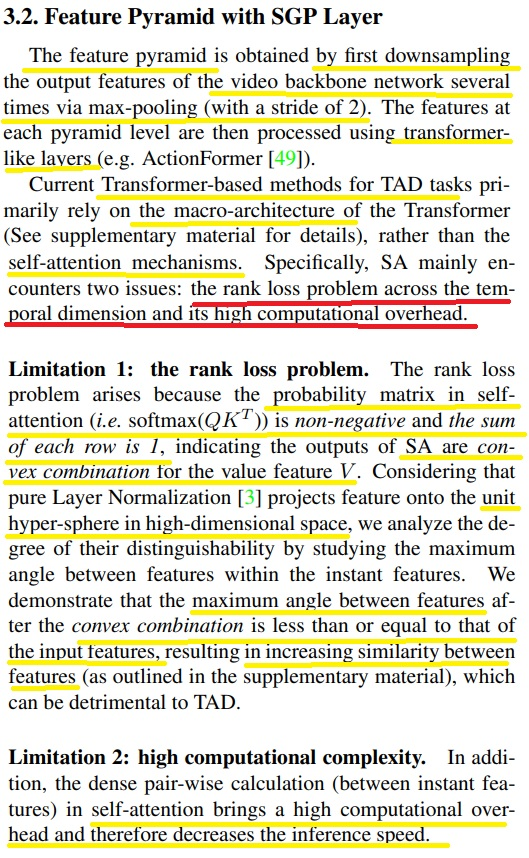
- 3.2. Feature Pyramid with SGP Layer
피처 피라미드는 비디오 백본 네트워크의 출력 피처를 여러 번의 맥스 풀링을 통해 다운 샘플링해서 얻음(stride = 2), 각 피라미드 레벨의 피처는 Transformer 기반 레이어 (예: ActionFormer)를 사용하여 처리됨. 현재 TAD작업에 대한 Transformer은 주로 transformer의 macro-architecture에 의존을 함 (self-attention매커니즘 보다 Transformer 의 매크로 아키택처에 주로 의존), 구체적으로 self-attention은 두가지 문제를 겪음 : 랭크 손실 문제와 높은 계산 비용입니다.
제한 1: 랭크 손실 문제. 랭크 손실 문제는 self-attention의 확률 행렬 (즉, softmax(QKT))이 비음수이고 각 행의 합이 1인 것으로 인해 발생함. 이는 SA의 출력이 값 피처 V에 대한 볼록 조합(convex combination)임을 나타냄. 퓨어 레이어 정규화 pure layer normalization [3]는 피처를 고차원 공간의 단위 초구면에 투영합니다. 우리는 인스턴트 피처 내에서 피처 간 최대 각도를 연구함으로써 그들의 구별성 정도를 분석합니다. 우리는 볼록 조합 이후 피처 간의 최대 각도가 입력 피처의 최대 각도보다 작거나 같음을 보여주며, 이로 인해 피처 간의 유사성이 증가함 이로인해 TAD에 해로울(detrimental) 수 있음.
제한 2: 제한 2: 높은 계산 복잡도. 또한, self-attention에서 인스턴트 피처 간의 밀집한 쌍별 계산 dense pair-wise calculation은 높은 계산 오버헤드를 야기하여 추론(inference) 속도를 감소시킵니다.
볼록 조합(convex combination)
- 1. 볼록 조합(convex combination)은 주어진 세트의 요소를 선형 조합하여 새로운 요소를 생성하는 것을 말합니다. 선형 조합은 각 요소에 대해 곱셈과 덧셈을 수행하여 새로운 값으로 결합하는 과정입니다.
2. 볼록 조합은 다음과 같은 특성을 가지고 있습니다:
1. 가중치는 비음수여야 합니다.
2. 가중치의 합은 1이어야 합니다.
예를 들어, 주어진 세트의 요소를 A, B, C라고 가정해보겠습니다. A, B, C에 대한 가중치를 각각 w1, w2, w3라고 할 때, 볼록 조합은 다음과 같이 표현됩니다:
w1 * A + w2 * B + w3 * C
퓨어 레이어 정규화 (pure layer normalization)
- 1. 퓨어 레이어 정규화(Pure Layer Normalization)는 신경망에서 사용되는 정규화 방법 중 하나입니다. 일반적인 레이어 정규화(Layer Normalization)와는 조금 다른 특징을 가지고 있습니다.
- 2. 퓨어 레이어 정규화는 입력 데이터를 특정 축을 기준으로 정규화하는 방법입니다. 일반적으로는 피처 축(axis)을 기준으로 정규화를 수행합니다. 정규화를 위해 평균과 표준 편차를 사용하며, 이를 통해 데이터의 분포를 조절합니다.
- 3. 퓨어 레이어 정규화는 데이터를 고차원 공간의 단위 초구면에 투영하는 역할을 합니다. 이를 통해 데이터의 표현을 조정하고, 학습의 안정성을 향상시킬 수 있습니다. 퓨어 레이어 정규화는 특히 인스턴스 간의 독립성을 증가시키고, 학습 속도를 빠르게 만들 수 있는 장점을 가지고 있습니다.
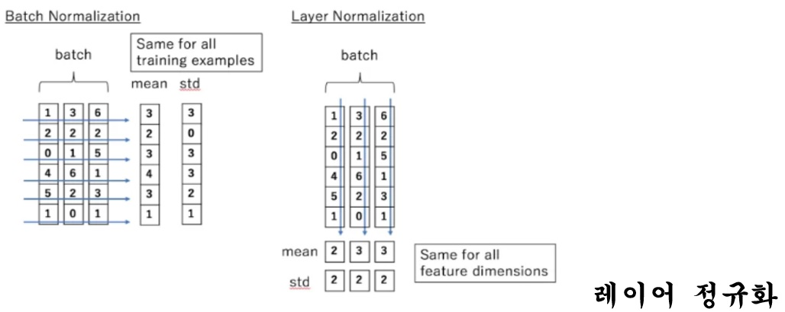
퓨어 레이어 정규화 (pure layer normalization)에 대한 설명
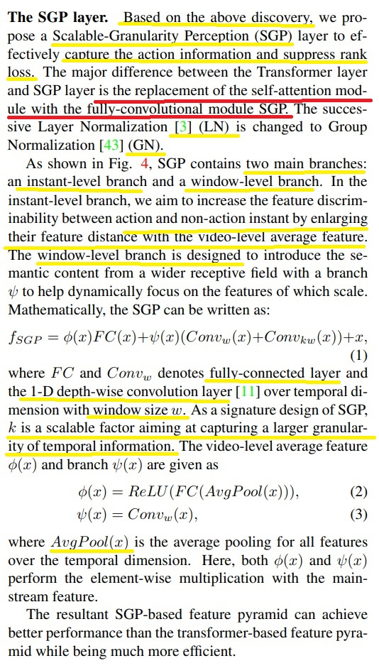
- The SGP layer
액션 정보를 효과적으로 포착하고 랭크 손실을 억제하기 위해 Scalable-Granularity Perception (SGP) 레이어를 제안함. Transformer 레이어와 SGP 레이어의 주요한 차이점은 self-attention 모듈을 fully-convolutional 모듈인 SGP로 대체하는 것입니다. 연속적인 Layer Normalization은 Group Normalization으로 변경됨.
SGP에는 두 개의 주요한 분기가 있습니다. 인스턴트 레벨 분기와 윈도우 레벨 분기입니다. 인스턴트 레벨 분기에서는 비디오 수준의 평균 피처와의 거리를 늘려 액션과 비액션 인스턴트 간의 특성 구별력을 높이는 것을 목표로함. 윈도우 레벨 분기는 스케일에 따라 동적으로 주의를 집중시킬 수 있도록 설계됨.
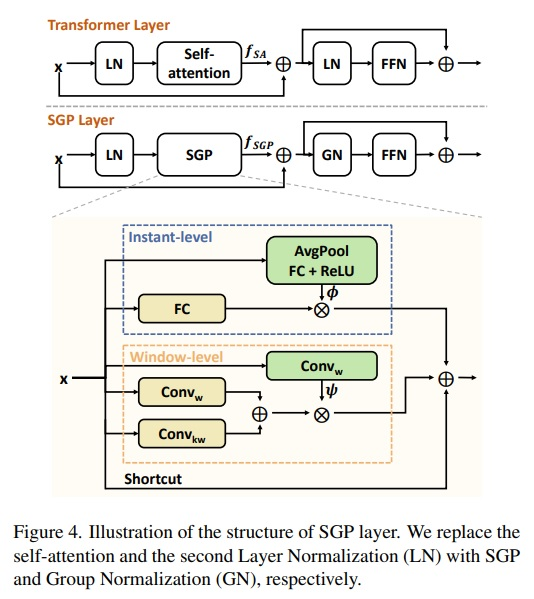
SGP can be written as
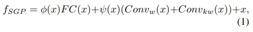
여기서 F_C는 완전 연결 레이어를 의미하고, Conv_w는 윈도우 크기 w로 시간 차원에 대한 1차원 깊이별 합성곱 레이어임.

SGP의 핵심적인 설계로서 k는 더 큰 시간 정보의 입방체성을 포착하기 위한 확장 가능한 요소. 비디오 수준의 평균 피처 ϕ(x)와 분기 ψ(x)는 다음과 같음.
여기서 AvgPool(x)는 시간 차원을 기준으로 모든 피처에 대한 평균 풀링을 수행합니다. 여기서 ϕ(x)와 ψ(x)는 메인 스트림 피처 main-stream feature와 요소별 곱셈 element-wise multiplication을 수행함.
결론 : transformer기반보다 좋음.
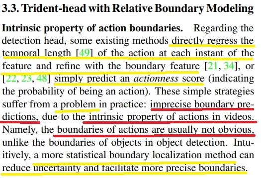
3.3. Trident-head with Relative Boundary Modeling
Intrinsic property of action boundaries
Detection head 에 대해 현존하는 방법들은 그냥 바로 각 인스턴트에서 액션의 시간 길이를 직접 회귀하고 경계 피처와 함께 세부 조정을 함. 똑은 액션셩 점수를 간단히 예측하는 방식을 취하기도 함. 이러한 방식은 실제로 정확하지 않은 경계 예측 문제를 가지고 있음. 고로 더 통계적인 경계 위치 결정 방법은 불확실성을 줄이고 더 정확한 경계를 용이하게 할 수 있다.

Trident-head
이 논문에서는 상대적인 경계 모델링을 기반으로 한 경계 지향Trident-head를 제안해서 액션 경계를 정확하게 위치 시킴.
즉, 일정 기간 동안의 피처들의 관계를 고려해서 해당 기간 내 각 instants의 경계일 확률을 상대적으로 모델링 하는것.Trident-head는 시작 경계, 종료 경계 및 액션의 시간적 중심을 각각 찾기 위해 시작 헤드, 종료 헤드 및 중심 오프셋 헤드로 구성됩니다.
Trident는 detector와 함께 end-to-end 훈련이 가능함.
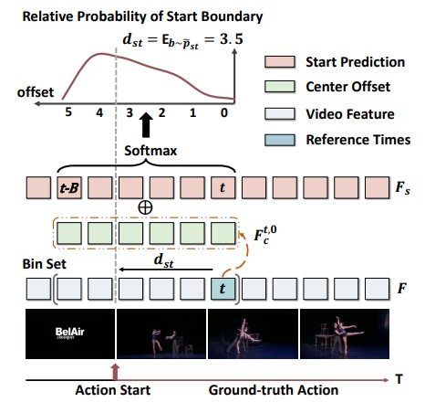
구체적으로, Fig. 5에서 보여지는 것처럼, 피처 피라미드에서 출력된 크기가 RT × D인 피처 시퀀스 F가 주어진다고 가정하면. 먼저, 세 개의 브랜치로부터 세 개의 피처 시퀀스를 얻고. Fs는 시작 지점인 각 인스턴트의 응답 값을 나타내고, Fe는 종료 지점인 각 인스턴트의 응답 값을 나타냄. 또한, 중심 offset head는 각 인스턴트 (범위 내) 액션의 midpoint의 액션을때 를 추정하는 데 목적이 있습니다.
그런 다음, 경계 헤드와 중심 오프셋 헤드의 출력을 결합하여 경계 거리를 모델링합니다.
식 (3)과 식 (4)는 각각 액션 인스턴스의 시작 경계와 종료 경계와의 거리를 계산하는 공식이다. 이를 통해 액션의 경계 위치를 추정할 수 있다. head들은 간단한 3개의 컨볼루션 레이어 네트워크로 모델링되며, 피처 피라미드의 모든 레벨에서 파라미터를 공유하여 파라미터 수를 줄입니다. 즉, 이는 피라미드의 각 크기에서 각 헤드에 동일한 가중치와 편향을 사용한다는 것을 의미하여. 파라미터 공유는 모델을 최적화하고 효율성을 향상시키는 데 도움이 되며, 전체적인 계산 비용과 메모리 요구 사항을 줄여준다는 뜻.
요약 : 상대적인 경계 모델링을 기반으로 Trident-head를 이용해 액션 경계를 정확하게 위치 시킴. 즉 일정 기간 동안의 피처들의 관계를 고려하여 해당 기간 내 각 인스턴트의 경계일 확률을 상대적으로 모델링하는 것. 그리고 3개의 층으로 이루어진 컨볼루션 신경망과 파라미터 공유를 통해 트라이던트 헤드는 모델 복잡성과 효율성 사이의 균형을 달성하며, 파라미터의 수를 관리 가능한 수준으로 유지하면서도 효과적인 경계 위치 파악을 보장함.
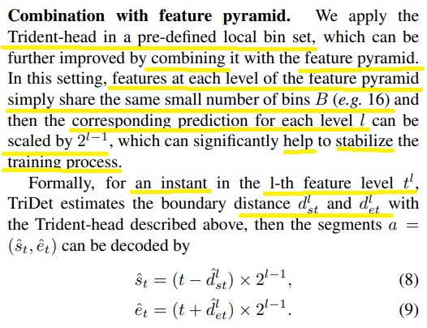
Combination with feature pyramid
Trident-head를 사전에 정의된 로컬 bin set에 적용하며, 이를 피처 피라미드와 결합하여 더욱 개선할 수 있었음. 경계 예측을 개선하기 위해 다양한 방법을 사용합니다. 이들을 크게 두 가지 범주로 나눔. 세그먼트 내 인스턴트 샘플링을 기반으로 한 예측 [22, 28, 36] 및 단일 인스턴트를 기반으로 한 예측. 첫 번째 범주는 예측된 인스턴트 세그먼트의 전역 피처에 따라 경계를 예측합니다.
이들은 각 인스턴트의 세부 정보가 아닌 전역 정보만을 고려함. 두 번째 범주는 인스턴트 수준의 피처를 기반으로 인스턴트와 해당 경계 사이의 거리를 직접 예측함. 일부는 경계 피처로 세그먼트를 보완합니다 [21, 34, 51]. 그러나 이들은 인접 인스턴트의 관계(즉, 경계가 될 상대적인 확률)를 고려하지 않음.
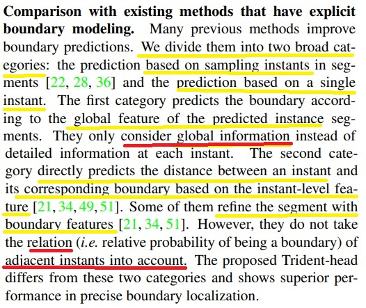
Comparison with existing methods that have explicit(명백한) boundary modeling
경계 예측을 개선하기 위해 다양한 방법을 사용합니다. 이들을 크게 두 가지 범주로 나눔. 세그먼트 내 인스턴트 샘플링을 기반으로 한 예측 [22, 28, 36] 및 단일 인스턴트를 기반으로 한 예측. 첫 번째 범주는 예측된 인스턴트 세그먼트의 전역 피처에 따라 경계를 예측합니다. 이들은 각 인스턴트의 세부 정보가 아닌 전역 정보만을 고려함. 두 번째 범주는 인스턴트 수준의 피처를 기반으로 인스턴트와 해당 경계 사이의 거리를 직접 예측함. 일부는 경계 피처로 세그먼트를 보완합니다 [21, 34, 51].
그러나 이들은 인접 인스턴트의 관계(즉, 경계가 될 상대적인 확률)를 고려하지 않음.
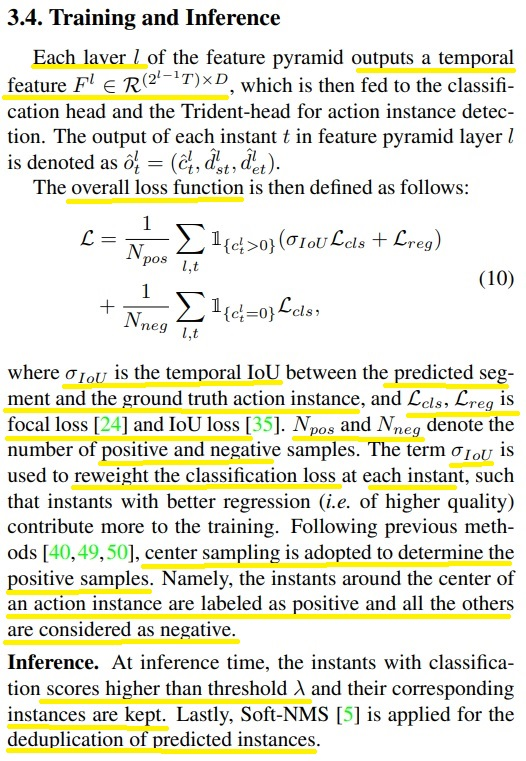
3.4. Training and Inference
전체 손실 함수는 위에 공식처럼 선언됨. 여기서 σIoU는 예측된 세그먼트와 실제 액션 인스턴스 간의 시간적 IoU를 나타내며, Lcls, Lreg는 포커스 손실(focal loss) [24]와 IoU 손실(IoU loss) [35]입니다. Npos와 Nneg는 양성 샘플과 음성 샘플의 수를 나타냅니다. σIoU는 각 인스턴트에서 분류 손실을 재조정하는 데 사용되어 더 좋은 회귀 결과(즉, 더 높은 품질)를 가진 인스턴트가 훈련에 더 크게 기여합니다. 이전의 방법들 [40, 49, 50]을 따라 양성 샘플을 결정하기 위해 센터 샘플링(center sampling)을 사용합니다. 즉, 액션 인스턴스의 중심 주변의 인스턴트는 양성으로 레이블링되고, 나머지는 음성으로 간주됩니다.
추론 단계에서는 분류 점수가 임계값 λ보다 높은 인스턴트와 해당 인스턴스를 유지합니다. 마지막으로, 예측된 인스턴스의 중복을 제거(deduplication)하기 위해 Soft-NMS [5]가 적용됩니다.
저자가 사용한 데이터 셋
- THUMOS14: 이 데이터셋은 20개의 스포츠 액션 클래스로 구성되어 있으며, 훈련 세트와 테스트 세트에 각각 200개와 213개의 트림되지 않은 비디오가 포함되어 있습니다. 훈련 세트에는 3,007개의 액션 인스턴스, 테스트 세트에는 3,358개의 액션 인스턴스가 있습니다.
- ActivityNet-1.3 및 HACS-Segment: 이 두 개의 대규모 데이터셋은 200개의 액션 클래스를 공유하고 있습니다. 훈련용으로는 각각 10,024개와 37,613개의 비디오가 제공되며, 테스트용으로는 각각 4,926개와 5,981개의 비디오가 있습니다.
- EPIC-KITCHEN 100: 이 데이터셋은 일인칭 시각 데이터셋으로서 명사 로컬라이제이션(예: 문)과 동사 로컬라이제이션(예: 문 열기) 두 가지 하위 태스크로 구성되어 있습니다.
논문 링크
논문 코드/링크 바로가기
 Master's Degree in NCKU CSIE (2023 ~)
Master's Degree in NCKU CSIE (2023 ~)
 Bachelor's Degree in NSYSU CSE (graduated)
Bachelor's Degree in NSYSU CSE (graduated)